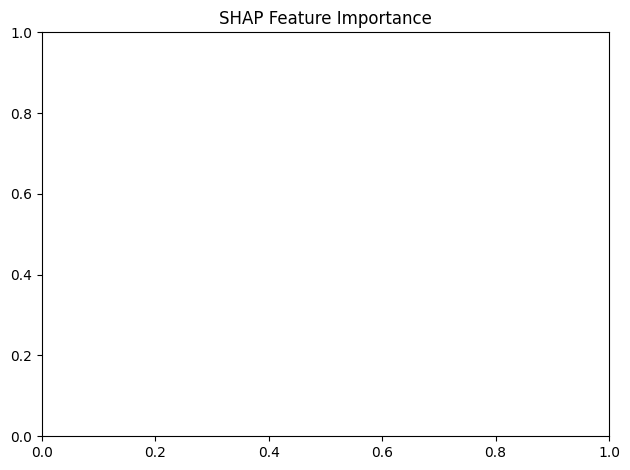

import pandas as pd
import numpy as np
from sklearn.model_selection import train_test_split
from sklearn.preprocessing import StandardScaler
import xgboost as xgb
import matplotlib.pyplot as plt
import seaborn as sns
from sklearn.metrics import (classification_report, confusion_matrix, roc_auc_score,roc_curve,precision_recall_curve, average_precision_score,
mean_squared_error, mean_absolute_error, r2_score, accuracy_score)
from sklearn.calibration import calibration_curve
import statsmodels.api as sm
import shapdf1 = pd.read_csv("psam_h34.csv")
df2 = pd.read_csv("psam_p34.csv")
merged_df = pd.merge(df1, df2, on='SERIALNO', how='inner')merged_df| RT_x | SERIALNO | DIVISION_x | PUMA_x | REGION_x | STATE_x | ADJHSG | ADJINC_x | WGTP | NP | ... | PWGTP71 | PWGTP72 | PWGTP73 | PWGTP74 | PWGTP75 | PWGTP76 | PWGTP77 | PWGTP78 | PWGTP79 | PWGTP80 | |
|---|---|---|---|---|---|---|---|---|---|---|---|---|---|---|---|---|---|---|---|---|---|
| 0 | H | 2023GQ0000001 | 2 | 2501 | 1 | 34 | 1000000 | 1019518 | 0 | 1 | ... | 68 | 66 | 67 | 69 | 69 | 67 | 68 | 71 | 65 | 67 |
| 1 | H | 2023GQ0000002 | 2 | 603 | 1 | 34 | 1000000 | 1019518 | 0 | 1 | ... | 4 | 49 | 94 | 78 | 66 | 45 | 56 | 50 | 39 | 84 |
| 2 | H | 2023GQ0000021 | 2 | 2103 | 1 | 34 | 1000000 | 1019518 | 0 | 1 | ... | 14 | 12 | 12 | 11 | 15 | 15 | 14 | 12 | 12 | 12 |
| 3 | H | 2023GQ0000058 | 2 | 307 | 1 | 34 | 1000000 | 1019518 | 0 | 1 | ... | 3 | 2 | 2 | 4 | 4 | 2 | 4 | 2 | 4 | 2 |
| 4 | H | 2023GQ0000158 | 2 | 1201 | 1 | 34 | 1000000 | 1019518 | 0 | 1 | ... | 2 | 2 | 20 | 20 | 16 | 24 | 29 | 3 | 16 | 4 |
| ... | ... | ... | ... | ... | ... | ... | ... | ... | ... | ... | ... | ... | ... | ... | ... | ... | ... | ... | ... | ... | ... |
| 94309 | H | 2023HU1459771 | 2 | 907 | 1 | 34 | 1000000 | 1019518 | 67 | 2 | ... | 146 | 120 | 94 | 67 | 69 | 47 | 57 | 76 | 23 | 117 |
| 94310 | H | 2023HU1459772 | 2 | 904 | 1 | 34 | 1000000 | 1019518 | 64 | 1 | ... | 63 | 18 | 21 | 66 | 63 | 64 | 60 | 75 | 97 | 18 |
| 94311 | H | 2023HU1459852 | 2 | 602 | 1 | 34 | 1000000 | 1019518 | 78 | 2 | ... | 21 | 83 | 20 | 21 | 146 | 114 | 77 | 80 | 90 | 18 |
| 94312 | H | 2023HU1459852 | 2 | 602 | 1 | 34 | 1000000 | 1019518 | 78 | 2 | ... | 32 | 84 | 25 | 19 | 149 | 118 | 90 | 111 | 84 | 19 |
| 94313 | H | 2023HU1459867 | 2 | 2002 | 1 | 34 | 1000000 | 1019518 | 50 | 1 | ... | 89 | 15 | 93 | 83 | 44 | 43 | 15 | 13 | 78 | 45 |
94314 rows × 527 columns
merged_df['JWTRNS'] = (merged_df['JWTRNS'] == 11).astype(int)
print(merged_df['JWTRNS'].value_counts())JWTRNS
0 87181
1 7133
Name: count, dtype: int64all_cols = ['ACCESSINET', 'AGEP', 'BROADBND', 'COW', 'CPLT', 'DDRS', 'DEAR', 'DEYE', 'DIALUP', 'DOUT', 'DPHY', 'DREM', 'ESR', 'GCL', 'HFL', 'HHL', 'HHLDRAGEP', 'HHLDRHISP', 'HHT', 'HICOV', 'HINCP', 'HISP', 'HISPEED', 'HUGCL', 'HUPAC', 'HUPAOC', 'HUPARC', 'INDP', 'JWAP', 'JWDP', 'JWMNP', 'JWRIP', 'LANX', 'LAPTOP', 'MAR', 'MIG', 'PRIVCOV', 'PUBCOV', 'POWPUMA', 'R18', 'R60', 'R65', 'RAC1P', 'SATELLITE', 'SCHL', 'SMARTPHONE', 'TABLET', 'TEL', 'WIF', 'WKEXREL', 'WKHP', 'WKL', 'WKWN', 'WORKSTAT', 'WRK', 'JWTRNS']
# First filter for JWTRNS values of 0 and 1
filtered_df = merged_df[merged_df['JWTRNS'].isin([0, 1])]
# Calculate percentage of NaN values for each column
nan_percentages = (filtered_df[all_cols].isna().sum() / len(filtered_df)) * 100
# Identify columns with less than 20% NaN values
cols_to_keep = nan_percentages[nan_percentages < 20].index.tolist()
# Print columns being dropped due to high NaN percentage
dropped_cols = set(all_cols) - set(cols_to_keep)
print("\nColumns dropped due to >20% NaN values:")
for col in dropped_cols:
print(f"{col}: {nan_percentages[col]:.2f}% NaN")
# Select columns with acceptable NaN levels
df_cleaned = filtered_df[cols_to_keep]
# Before dropping NaN rows, check class distribution
print("\nClass distribution before dropping NaN rows:")
print(df_cleaned['JWTRNS'].value_counts(normalize=True))
# Drop rows with NaN values
df_final = df_cleaned.dropna()
# Check final class distribution
print("\nClass distribution after dropping NaN rows:")
print(df_final['JWTRNS'].value_counts(normalize=True))
# Print shape at each step
print("\nShape at each step:")
print(f"Original: {merged_df.shape}")
print(f"After filtering JWTRNS: {filtered_df.shape}")
print(f"After dropping high-NaN columns: {df_cleaned.shape}")
print(f"Final after dropping NaN rows: {df_final.shape}")
# If you want to proceed with creating X and y:
X = df_final.drop('JWTRNS', axis=1)
y = df_final['JWTRNS']
# Optional: Print final number of records for each class
print("\nFinal number of records per class:")
print(y.value_counts())
Columns dropped due to >20% NaN values:
COW: 37.87% NaN
WKWN: 45.27% NaN
GCL: 32.15% NaN
WRK: 28.03% NaN
CPLT: 28.92% NaN
JWRIP: 64.80% NaN
INDP: 37.87% NaN
JWMNP: 58.33% NaN
JWAP: 58.33% NaN
JWDP: 58.33% NaN
WKHP: 45.27% NaN
POWPUMA: 50.76% NaN
Class distribution before dropping NaN rows:
JWTRNS
0 0.92437
1 0.07563
Name: proportion, dtype: float64
Class distribution after dropping NaN rows:
JWTRNS
0 0.90297
1 0.09703
Name: proportion, dtype: float64
Shape at each step:
Original: (94314, 527)
After filtering JWTRNS: (94314, 527)
After dropping high-NaN columns: (94314, 44)
Final after dropping NaN rows: (59590, 44)
Final number of records per class:
JWTRNS
0 53808
1 5782
Name: count, dtype: int64# Define known continuous columns
KNOWN_CONTINUOUS = [
'HINCP', # Household income
'AGEP', # Age
'HHLDRAGEP' # Householder age
]
def identify_continuous_columns(df, known_continuous, unique_threshold=0.05):
"""
Identify continuous columns combining known continuous variables with automatic detection
"""
continuous_columns = known_continuous.copy() # Start with known continuous columns
n_rows = len(df)
# Check remaining columns for potential continuous variables
remaining_columns = [col for col in df.columns if col not in known_continuous]
for column in remaining_columns:
# Try to convert to numeric
series = pd.to_numeric(df[column], errors='coerce')
n_unique = series.nunique()
# Calculate ratio of unique values
unique_ratio = n_unique / n_rows
# Conditions for continuous variable
if (series.dtype in ['int64', 'float64'] and
unique_ratio > unique_threshold and
n_unique > 2):
continuous_columns.append(column)
print("\nContinuous columns:")
print("Known continuous columns:")
for col in known_continuous:
if col in df.columns:
print(f"- {col}: {df[col].nunique()} unique values")
print("\nAutomatically identified continuous columns:")
auto_continuous = [col for col in continuous_columns if col not in known_continuous]
for col in auto_continuous:
print(f"- {col}: {df[col].nunique()} unique values")
return continuous_columns
def create_dummies_with_base(df, known_continuous, unique_threshold=0.05):
"""
Create dummy variables while handling both known and automatically detected continuous features
"""
print("\nAnalyzing and creating dummy variables...")
df_processed = df.copy()
# Identify all continuous columns
continuous_columns = identify_continuous_columns(df_processed, known_continuous, unique_threshold)
dummies_list = []
for column in df_processed.columns:
if column in continuous_columns:
# Handle continuous variables
print(f"\nProcessing continuous variable: {column}")
df_processed[column] = pd.to_numeric(df_processed[column], errors='coerce')
dummies_list.append(df_processed[[column]])
else:
# Handle categorical variables
print(f"\nProcessing categorical variable: {column}")
df_temp = df_processed[column].copy()
# Convert to string and handle special cases
df_temp = df_temp.map(lambda x: str(x) if pd.notnull(x) else np.nan)
# Create dummies with drop_first=True
dummies = pd.get_dummies(df_temp, prefix=f"{column}_dummy", drop_first=True)
dummies_list.append(dummies)
if len(dummies.columns) > 0:
base_category = df_temp.dropna().unique()[0]
print(f"- Dropped base category for {column}: {base_category}")
print(f"- Created {len(dummies.columns)} dummy variables")
# Combine all processed columns
final_df = pd.concat(dummies_list, axis=1)
# Print summary statistics
print("\nSummary:")
print(f"Original shape: {df.shape}")
print(f"Final shape: {final_df.shape}")
print(f"Known continuous variables: {len(known_continuous)}")
print(f"Total continuous variables: {len(continuous_columns)}")
print(f"Categorical variables: {len(df.columns) - len(continuous_columns)}")
return final_df, continuous_columns
# Create dummies with combined feature detection
X_with_dummies, identified_continuous = create_dummies_with_base(X, KNOWN_CONTINUOUS)
# Standardize continuous features
scaler = StandardScaler()
for column in identified_continuous:
if column in X_with_dummies.columns:
col_data = X_with_dummies[[column]].fillna(X_with_dummies[column].median())
X_with_dummies[column] = scaler.fit_transform(col_data)
print(f"\nFinal shape after standardization: {X_with_dummies.shape}")
Analyzing and creating dummy variables...
Continuous columns:
Known continuous columns:
- HINCP: 5493 unique values
- AGEP: 76 unique values
- HHLDRAGEP: 76 unique values
Automatically identified continuous columns:
Processing categorical variable: ACCESSINET
Processing continuous variable: AGEP
Processing categorical variable: BROADBND
- Dropped base category for BROADBND: 1.0
- Created 1 dummy variables
Processing categorical variable: DDRS
- Dropped base category for DDRS: 2.0
- Created 1 dummy variables
Processing categorical variable: DEAR
- Dropped base category for DEAR: 2
- Created 1 dummy variables
Processing categorical variable: DEYE
- Dropped base category for DEYE: 2
- Created 1 dummy variables
Processing categorical variable: DIALUP
- Dropped base category for DIALUP: 2.0
- Created 1 dummy variables
Processing categorical variable: DOUT
- Dropped base category for DOUT: 2.0
- Created 1 dummy variables
Processing categorical variable: DPHY
- Dropped base category for DPHY: 2.0
- Created 1 dummy variables
Processing categorical variable: DREM
- Dropped base category for DREM: 2.0
- Created 1 dummy variables
Processing categorical variable: ESR
- Dropped base category for ESR: 1.0
- Created 5 dummy variables
Processing categorical variable: HFL
- Dropped base category for HFL: 1.0
- Created 8 dummy variables
Processing categorical variable: HHL
- Dropped base category for HHL: 3.0
- Created 4 dummy variables
Processing continuous variable: HHLDRAGEP
Processing categorical variable: HHLDRHISP
- Dropped base category for HHLDRHISP: 1.0
- Created 23 dummy variables
Processing categorical variable: HHT
- Dropped base category for HHT: 1.0
- Created 2 dummy variables
Processing categorical variable: HICOV
- Dropped base category for HICOV: 1
- Created 1 dummy variables
Processing continuous variable: HINCP
Processing categorical variable: HISP
- Dropped base category for HISP: 1
- Created 23 dummy variables
Processing categorical variable: HISPEED
- Dropped base category for HISPEED: 2.0
- Created 1 dummy variables
Processing categorical variable: HUGCL
- Dropped base category for HUGCL: 0.0
- Created 1 dummy variables
Processing categorical variable: HUPAC
- Dropped base category for HUPAC: 4.0
- Created 3 dummy variables
Processing categorical variable: HUPAOC
- Dropped base category for HUPAOC: 4.0
- Created 3 dummy variables
Processing categorical variable: HUPARC
- Dropped base category for HUPARC: 4.0
- Created 3 dummy variables
Processing categorical variable: LANX
- Dropped base category for LANX: 2.0
- Created 1 dummy variables
Processing categorical variable: LAPTOP
- Dropped base category for LAPTOP: 1.0
- Created 1 dummy variables
Processing categorical variable: MAR
- Dropped base category for MAR: 1
- Created 4 dummy variables
Processing categorical variable: MIG
- Dropped base category for MIG: 1.0
- Created 2 dummy variables
Processing categorical variable: PRIVCOV
- Dropped base category for PRIVCOV: 1
- Created 1 dummy variables
Processing categorical variable: PUBCOV
- Dropped base category for PUBCOV: 2
- Created 1 dummy variables
Processing categorical variable: R18
- Dropped base category for R18: 0.0
- Created 1 dummy variables
Processing categorical variable: R60
- Dropped base category for R60: 1.0
- Created 2 dummy variables
Processing categorical variable: R65
- Dropped base category for R65: 0.0
- Created 2 dummy variables
Processing categorical variable: RAC1P
- Dropped base category for RAC1P: 1
- Created 8 dummy variables
Processing categorical variable: SATELLITE
- Dropped base category for SATELLITE: 2.0
- Created 1 dummy variables
Processing categorical variable: SCHL
- Dropped base category for SCHL: 22.0
- Created 23 dummy variables
Processing categorical variable: SMARTPHONE
- Dropped base category for SMARTPHONE: 1.0
- Created 1 dummy variables
Processing categorical variable: TABLET
- Dropped base category for TABLET: 1.0
- Created 1 dummy variables
Processing categorical variable: TEL
- Dropped base category for TEL: 1.0
- Created 1 dummy variables
Processing categorical variable: WIF
- Dropped base category for WIF: 3.0
- Created 3 dummy variables
Processing categorical variable: WKEXREL
- Dropped base category for WKEXREL: 5.0
- Created 14 dummy variables
Processing categorical variable: WKL
- Dropped base category for WKL: 1.0
- Created 2 dummy variables
Processing categorical variable: WORKSTAT
- Dropped base category for WORKSTAT: 1.0
- Created 14 dummy variables
Summary:
Original shape: (59590, 43)
Final shape: (59590, 171)
Known continuous variables: 3
Total continuous variables: 3
Categorical variables: 40
Final shape after standardization: (59590, 171)# First, let's convert any boolean columns to numeric in X_with_dummies
for col in X_with_dummies.columns:
if X_with_dummies[col].dtype == bool:
X_with_dummies[col] = X_with_dummies[col].astype(int)
elif X_with_dummies[col].dtype == 'object':
X_with_dummies[col] = pd.to_numeric(X_with_dummies[col], errors='coerce')X_with_dummies| AGEP | BROADBND_dummy_2.0 | DDRS_dummy_2.0 | DEAR_dummy_2 | DEYE_dummy_2 | DIALUP_dummy_2.0 | DOUT_dummy_2.0 | DPHY_dummy_2.0 | DREM_dummy_2.0 | ESR_dummy_2.0 | ... | WORKSTAT_dummy_14.0 | WORKSTAT_dummy_15.0 | WORKSTAT_dummy_2.0 | WORKSTAT_dummy_3.0 | WORKSTAT_dummy_4.0 | WORKSTAT_dummy_5.0 | WORKSTAT_dummy_6.0 | WORKSTAT_dummy_7.0 | WORKSTAT_dummy_8.0 | WORKSTAT_dummy_9.0 | |
|---|---|---|---|---|---|---|---|---|---|---|---|---|---|---|---|---|---|---|---|---|---|
| 3350 | 0.665865 | 0 | 1 | 1 | 1 | 1 | 1 | 1 | 1 | 0 | ... | 0 | 0 | 0 | 0 | 0 | 0 | 0 | 0 | 0 | 0 |
| 3351 | 0.449724 | 0 | 1 | 1 | 1 | 1 | 1 | 1 | 1 | 0 | ... | 0 | 0 | 0 | 0 | 0 | 0 | 0 | 0 | 0 | 0 |
| 3352 | -1.279404 | 0 | 1 | 1 | 1 | 1 | 1 | 1 | 1 | 0 | ... | 0 | 0 | 0 | 0 | 0 | 0 | 0 | 0 | 0 | 0 |
| 3353 | -1.441509 | 0 | 1 | 1 | 1 | 1 | 1 | 1 | 1 | 0 | ... | 0 | 0 | 0 | 0 | 0 | 0 | 0 | 0 | 0 | 0 |
| 3355 | -0.522910 | 0 | 1 | 1 | 1 | 1 | 1 | 1 | 1 | 0 | ... | 0 | 0 | 0 | 1 | 0 | 0 | 0 | 0 | 0 | 0 |
| ... | ... | ... | ... | ... | ... | ... | ... | ... | ... | ... | ... | ... | ... | ... | ... | ... | ... | ... | ... | ... | ... |
| 94305 | 0.395689 | 0 | 1 | 1 | 1 | 1 | 1 | 1 | 1 | 0 | ... | 0 | 0 | 0 | 0 | 0 | 0 | 0 | 0 | 0 | 0 |
| 94306 | 0.449724 | 0 | 1 | 1 | 1 | 1 | 1 | 1 | 1 | 0 | ... | 0 | 0 | 0 | 0 | 0 | 0 | 0 | 0 | 0 | 0 |
| 94307 | -1.387474 | 0 | 1 | 1 | 1 | 1 | 1 | 1 | 1 | 0 | ... | 0 | 0 | 0 | 0 | 0 | 0 | 0 | 0 | 0 | 0 |
| 94308 | 0.936041 | 0 | 1 | 1 | 1 | 1 | 1 | 1 | 1 | 0 | ... | 0 | 0 | 0 | 0 | 0 | 0 | 0 | 0 | 0 | 0 |
| 94309 | 0.611830 | 0 | 1 | 1 | 1 | 1 | 1 | 1 | 1 | 0 | ... | 0 | 0 | 0 | 0 | 0 | 0 | 0 | 0 | 0 | 0 |
59590 rows × 171 columns
X_train, X_test, y_train, y_test = train_test_split(
X_with_dummies, y, test_size=0.2, random_state=42, stratify=y
)
print(f"\nFinal shapes after VIF and split:")
print(f"X_train: {X_train.shape}")
print(f"X_test: {X_test.shape}")
Final shapes after VIF and split:
X_train: (47672, 171)
X_test: (11918, 171)import statsmodels.api as sm
import numpy as np
print("\nFitting Probit model for effect sizes and p-values...")
# 1. Remove low variance columns
variance_threshold = 0.01 # Adjust this value as needed
variances = X_train.var()
low_variance_columns = variances[variances < variance_threshold].index
X_train_filtered = X_train.drop(columns=low_variance_columns)
print(f"Removed {len(low_variance_columns)} low variance columns")
# 2. Handle perfect multicollinearity
# Drop highly correlated features
def remove_highly_correlated_features(df, threshold=0.95):
corr_matrix = df.corr().abs()
upper = corr_matrix.where(np.triu(np.ones(corr_matrix.shape), k=1).astype(bool))
to_drop = [column for column in upper.columns if any(upper[column] > threshold)]
return df.drop(columns=to_drop), to_drop
X_train_filtered, dropped_corr = remove_highly_correlated_features(X_train_filtered)
print(f"Removed {len(dropped_corr)} highly correlated features")
# 3. Add constant and fit model
X_train_probit = sm.add_constant(X_train_filtered)
# 4. Ensure all data is numeric
X_train_probit = X_train_probit.astype(float)
# 5. Fit Probit model with robust covariance
try:
probit_model = sm.Probit(y_train, X_train_probit)
probit_results = probit_model.fit(method='newton', cov_type='HC0')
print("\nProbit Model Summary:")
print(probit_results.summary())
# Calculate marginal effects
print("\nMarginal Effects (Probit):")
marginal_effects = probit_results.get_margeff(at='overall')
print(marginal_effects.summary())
# Print top significant variables
significant_vars = pd.DataFrame({
'Variable': X_train_probit.columns,
'Coefficient': probit_results.params,
'Std Error': probit_results.bse,
'Z-Score': probit_results.tvalues,
'P-Value': probit_results.pvalues
}).sort_values('P-Value')
print("\nTop 10 Most Significant Variables:")
print(significant_vars.head(10))
except Exception as e:
print(f"Error in model fitting: {str(e)}")
print("\nData shape:", X_train_probit.shape)
print("\nNumber of NaN values:", X_train_probit.isna().sum().sum())
Fitting Probit model for effect sizes and p-values...
Removed 64 low variance columns
Removed 4 highly correlated features
Warning: Maximum number of iterations has been exceeded.
Current function value: 0.253002
Iterations: 35
Probit Model Summary:/usr/local/lib/python3.11/dist-packages/statsmodels/base/model.py:607: ConvergenceWarning: Maximum Likelihood optimization failed to converge. Check mle_retvals
warnings.warn("Maximum Likelihood optimization failed to " Probit Regression Results
==============================================================================
Dep. Variable: JWTRNS No. Observations: 47672
Model: Probit Df Residuals: 47570
Method: MLE Df Model: 101
Date: Thu, 06 Feb 2025 Pseudo R-squ.: 0.2057
Time: 08:32:57 Log-Likelihood: -12061.
converged: False LL-Null: -15185.
Covariance Type: HC0 LLR p-value: 0.000
========================================================================================
coef std err z P>|z| [0.025 0.975]
----------------------------------------------------------------------------------------
const -1.7055 0.374 -4.562 0.000 -2.438 -0.973
AGEP 0.0670 0.024 2.738 0.006 0.019 0.115
BROADBND_dummy_2.0 0.0175 0.061 0.284 0.776 -0.103 0.138
DDRS_dummy_2.0 0.1390 0.173 0.801 0.423 -0.201 0.479
DEAR_dummy_2 0.0425 0.078 0.547 0.585 -0.110 0.195
DEYE_dummy_2 0.1593 0.093 1.717 0.086 -0.023 0.341
DIALUP_dummy_2.0 0.1160 0.070 1.662 0.097 -0.021 0.253
DOUT_dummy_2.0 -0.3907 0.114 -3.441 0.001 -0.613 -0.168
DPHY_dummy_2.0 0.0479 0.085 0.561 0.575 -0.119 0.215
DREM_dummy_2.0 -0.0076 0.091 -0.084 0.933 -0.187 0.171
ESR_dummy_2.0 -5.2626 2.35e+06 -2.24e-06 1.000 -4.61e+06 4.61e+06
ESR_dummy_3.0 -6.0468 0.102 -59.231 0.000 -6.247 -5.847
ESR_dummy_6.0 -6.9979 0.119 -58.696 0.000 -7.232 -6.764
HFL_dummy_2.0 -0.0533 0.056 -0.955 0.339 -0.163 0.056
HFL_dummy_3.0 -0.0272 0.031 -0.888 0.375 -0.087 0.033
HFL_dummy_4.0 -0.0713 0.036 -1.961 0.050 -0.143 -4.5e-05
HHL_dummy_2.0 -0.0691 0.050 -1.373 0.170 -0.168 0.030
HHL_dummy_3.0 0.0639 0.044 1.451 0.147 -0.022 0.150
HHL_dummy_4.0 -0.0389 0.054 -0.718 0.473 -0.145 0.067
HHL_dummy_5.0 -0.0476 0.071 -0.670 0.503 -0.187 0.092
HHLDRAGEP 0.0182 0.022 0.845 0.398 -0.024 0.060
HHLDRHISP_dummy_16.0 0.0560 0.126 0.443 0.658 -0.192 0.304
HHLDRHISP_dummy_17.0 0.0600 0.158 0.379 0.705 -0.250 0.370
HHLDRHISP_dummy_19.0 -0.3912 0.194 -2.013 0.044 -0.772 -0.010
HHLDRHISP_dummy_2.0 -0.2452 0.161 -1.524 0.128 -0.561 0.070
HHLDRHISP_dummy_3.0 0.0085 0.078 0.109 0.913 -0.144 0.161
HHLDRHISP_dummy_5.0 -0.0056 0.139 -0.040 0.968 -0.277 0.266
HHT_dummy_2.0 0.1672 2.16e+10 7.75e-12 1.000 -4.23e+10 4.23e+10
HHT_dummy_3.0 -0.3132 5.31e+06 -5.9e-08 1.000 -1.04e+07 1.04e+07
HICOV_dummy_2 -0.0794 0.071 -1.111 0.266 -0.219 0.061
HINCP 0.0935 0.009 10.519 0.000 0.076 0.111
HISP_dummy_16 -0.0519 0.124 -0.418 0.676 -0.295 0.191
HISP_dummy_17 -0.2335 0.161 -1.455 0.146 -0.548 0.081
HISP_dummy_19 0.1699 0.172 0.987 0.323 -0.167 0.507
HISP_dummy_2 0.1094 0.144 0.763 0.446 -0.172 0.391
HISP_dummy_3 -0.0504 0.077 -0.655 0.513 -0.201 0.100
HISP_dummy_5 0.0718 0.136 0.529 0.597 -0.194 0.338
HISPEED_dummy_2.0 -0.1167 0.035 -3.346 0.001 -0.185 -0.048
HUGCL_dummy_1.0 0.0097 0.056 0.175 0.861 -0.099 0.119
HUPAC_dummy_2.0 -0.0800 0.104 -0.771 0.441 -0.283 0.123
HUPAC_dummy_3.0 -0.2080 0.134 -1.557 0.119 -0.470 0.054
HUPAC_dummy_4.0 -0.0577 0.094 -0.613 0.540 -0.242 0.127
HUPAOC_dummy_2.0 0.0061 0.109 0.056 0.955 -0.207 0.220
HUPAOC_dummy_3.0 0.1279 0.140 0.914 0.361 -0.146 0.402
HUPAOC_dummy_4.0 -0.0343 0.097 -0.352 0.725 -0.225 0.157
LANX_dummy_2.0 0.0587 0.042 1.412 0.158 -0.023 0.140
LAPTOP_dummy_2.0 -0.2561 0.052 -4.925 0.000 -0.358 -0.154
MAR_dummy_2 -0.0736 0.094 -0.786 0.432 -0.257 0.110
MAR_dummy_3 -0.0375 0.055 -0.687 0.492 -0.145 0.070
MAR_dummy_4 0.1311 0.094 1.392 0.164 -0.053 0.316
MAR_dummy_5 -0.0893 0.046 -1.960 0.050 -0.179 1.3e-05
MIG_dummy_3.0 0.1084 0.036 2.988 0.003 0.037 0.180
PRIVCOV_dummy_2 0.0136 0.051 0.266 0.790 -0.087 0.114
PUBCOV_dummy_2 0.0873 0.044 1.989 0.047 0.001 0.173
R60_dummy_1.0 -0.0303 0.035 -0.858 0.391 -0.099 0.039
R60_dummy_2.0 -0.0048 0.042 -0.113 0.910 -0.088 0.078
R65_dummy_1.0 0.0077 0.037 0.204 0.838 -0.066 0.081
R65_dummy_2.0 0.1076 0.049 2.193 0.028 0.011 0.204
RAC1P_dummy_2 -0.0499 0.038 -1.325 0.185 -0.124 0.024
RAC1P_dummy_6 0.1099 0.038 2.866 0.004 0.035 0.185
RAC1P_dummy_8 -0.0905 0.053 -1.698 0.090 -0.195 0.014
RAC1P_dummy_9 0.0315 0.038 0.829 0.407 -0.043 0.106
SATELLITE_dummy_2.0 0.0478 0.052 0.912 0.362 -0.055 0.150
SCHL_dummy_13.0 0.1440 0.156 0.926 0.355 -0.161 0.449
SCHL_dummy_14.0 -0.0403 0.138 -0.292 0.770 -0.311 0.230
SCHL_dummy_15.0 0.1638 0.119 1.373 0.170 -0.070 0.398
SCHL_dummy_16.0 0.0871 0.084 1.039 0.299 -0.077 0.251
SCHL_dummy_17.0 0.2057 0.107 1.915 0.055 -0.005 0.416
SCHL_dummy_18.0 0.1795 0.092 1.947 0.052 -0.001 0.360
SCHL_dummy_19.0 0.3121 0.086 3.646 0.000 0.144 0.480
SCHL_dummy_20.0 0.2563 0.089 2.893 0.004 0.083 0.430
SCHL_dummy_21.0 0.6000 0.082 7.299 0.000 0.439 0.761
SCHL_dummy_22.0 0.5716 0.084 6.816 0.000 0.407 0.736
SCHL_dummy_23.0 0.3064 0.093 3.290 0.001 0.124 0.489
SCHL_dummy_24.0 0.3978 0.098 4.069 0.000 0.206 0.589
SMARTPHONE_dummy_2.0 -0.0765 0.071 -1.077 0.282 -0.216 0.063
TABLET_dummy_2.0 0.0026 0.026 0.100 0.921 -0.048 0.053
WIF_dummy_1.0 0.2502 0.292 0.857 0.391 -0.322 0.822
WIF_dummy_2.0 0.1825 0.293 0.623 0.533 -0.392 0.757
WIF_dummy_3.0 0.0286 0.294 0.097 0.922 -0.548 0.605
WKEXREL_dummy_10.0 0.2867 2.16e+10 1.33e-11 1.000 -4.23e+10 4.23e+10
WKEXREL_dummy_11.0 0.0967 2.16e+10 4.48e-12 1.000 -4.23e+10 4.23e+10
WKEXREL_dummy_12.0 -0.2163 2.16e+10 -1e-11 1.000 -4.23e+10 4.23e+10
WKEXREL_dummy_13.0 0.0062 8.22e+06 7.56e-10 1.000 -1.61e+07 1.61e+07
WKEXREL_dummy_14.0 -0.0729 8.14e+06 -8.95e-09 1.000 -1.6e+07 1.6e+07
WKEXREL_dummy_15.0 -0.2465 9.21e+06 -2.68e-08 1.000 -1.81e+07 1.81e+07
WKEXREL_dummy_2.0 -0.0407 0.031 -1.320 0.187 -0.101 0.020
WKEXREL_dummy_3.0 -0.1801 0.072 -2.495 0.013 -0.322 -0.039
WKEXREL_dummy_4.0 -0.0240 0.034 -0.711 0.477 -0.090 0.042
WKEXREL_dummy_5.0 -0.0269 0.049 -0.547 0.585 -0.123 0.070
WKEXREL_dummy_6.0 -0.0786 0.087 -0.899 0.369 -0.250 0.093
WKEXREL_dummy_7.0 -0.1291 0.076 -1.693 0.090 -0.279 0.020
WKEXREL_dummy_8.0 -0.1110 0.096 -1.162 0.245 -0.298 0.076
WKEXREL_dummy_9.0 -0.3651 0.232 -1.575 0.115 -0.819 0.089
WKL_dummy_2.0 -0.8893 0.094 -9.413 0.000 -1.074 -0.704
WKL_dummy_3.0 1.5457 0.097 15.886 0.000 1.355 1.736
WORKSTAT_dummy_10.0 -0.5093 0.450 -1.131 0.258 -1.392 0.373
WORKSTAT_dummy_12.0 -0.1287 0.488 -0.264 0.792 -1.085 0.828
WORKSTAT_dummy_13.0 0.3465 0.314 1.103 0.270 -0.269 0.962
WORKSTAT_dummy_15.0 0.4656 0.401 1.160 0.246 -0.321 1.252
WORKSTAT_dummy_2.0 0.1987 0.096 2.078 0.038 0.011 0.386
WORKSTAT_dummy_3.0 0.0993 0.063 1.581 0.114 -0.024 0.222
WORKSTAT_dummy_7.0 0.0596 0.068 0.872 0.383 -0.074 0.194
WORKSTAT_dummy_9.0 0.1506 0.221 0.681 0.496 -0.283 0.584
========================================================================================
Possibly complete quasi-separation: A fraction 0.37 of observations can be
perfectly predicted. This might indicate that there is complete
quasi-separation. In this case some parameters will not be identified.
Marginal Effects (Probit):
Probit Marginal Effects
=====================================
Dep. Variable: JWTRNS
Method: dydx
At: overall
========================================================================================
dy/dx std err z P>|z| [0.025 0.975]
----------------------------------------------------------------------------------------
AGEP 0.0094 nan nan nan nan nan
BROADBND_dummy_2.0 0.0024 nan nan nan nan nan
DDRS_dummy_2.0 0.0195 nan nan nan nan nan
DEAR_dummy_2 0.0059 nan nan nan nan nan
DEYE_dummy_2 0.0223 nan nan nan nan nan
DIALUP_dummy_2.0 0.0162 nan nan nan nan nan
DOUT_dummy_2.0 -0.0547 nan nan nan nan nan
DPHY_dummy_2.0 0.0067 nan nan nan nan nan
DREM_dummy_2.0 -0.0011 nan nan nan nan nan
ESR_dummy_2.0 -0.7365 3.29e+05 -2.24e-06 1.000 -6.45e+05 6.45e+05
ESR_dummy_3.0 -0.8463 nan nan nan nan nan
ESR_dummy_6.0 -0.9794 nan nan nan nan nan
HFL_dummy_2.0 -0.0075 nan nan nan nan nan
HFL_dummy_3.0 -0.0038 nan nan nan nan nan
HFL_dummy_4.0 -0.0100 nan nan nan nan nan
HHL_dummy_2.0 -0.0097 nan nan nan nan nan
HHL_dummy_3.0 0.0089 nan nan nan nan nan
HHL_dummy_4.0 -0.0054 nan nan nan nan nan
HHL_dummy_5.0 -0.0067 nan nan nan nan nan
HHLDRAGEP 0.0025 nan nan nan nan nan
HHLDRHISP_dummy_16.0 0.0078 nan nan nan nan nan
HHLDRHISP_dummy_17.0 0.0084 nan nan nan nan nan
HHLDRHISP_dummy_19.0 -0.0548 nan nan nan nan nan
HHLDRHISP_dummy_2.0 -0.0343 nan nan nan nan nan
HHLDRHISP_dummy_3.0 0.0012 nan nan nan nan nan
HHLDRHISP_dummy_5.0 -0.0008 nan nan nan nan nan
HHT_dummy_2.0 0.0234 3.02e+09 7.75e-12 1.000 -5.92e+09 5.92e+09
HHT_dummy_3.0 -0.0438 7.65e+05 -5.73e-08 1.000 -1.5e+06 1.5e+06
HICOV_dummy_2 -0.0111 nan nan nan nan nan
HINCP 0.0131 nan nan nan nan nan
HISP_dummy_16 -0.0073 nan nan nan nan nan
HISP_dummy_17 -0.0327 nan nan nan nan nan
HISP_dummy_19 0.0238 nan nan nan nan nan
HISP_dummy_2 0.0153 nan nan nan nan nan
HISP_dummy_3 -0.0071 nan nan nan nan nan
HISP_dummy_5 0.0100 nan nan nan nan nan
HISPEED_dummy_2.0 -0.0163 nan nan nan nan nan
HUGCL_dummy_1.0 0.0014 nan nan nan nan nan
HUPAC_dummy_2.0 -0.0112 nan nan nan nan nan
HUPAC_dummy_3.0 -0.0291 nan nan nan nan nan
HUPAC_dummy_4.0 -0.0081 nan nan nan nan nan
HUPAOC_dummy_2.0 0.0009 nan nan nan nan nan
HUPAOC_dummy_3.0 0.0179 nan nan nan nan nan
HUPAOC_dummy_4.0 -0.0048 nan nan nan nan nan
LANX_dummy_2.0 0.0082 nan nan nan nan nan
LAPTOP_dummy_2.0 -0.0358 nan nan nan nan nan
MAR_dummy_2 -0.0103 nan nan nan nan nan
MAR_dummy_3 -0.0052 nan nan nan nan nan
MAR_dummy_4 0.0183 nan nan nan nan nan
MAR_dummy_5 -0.0125 nan nan nan nan nan
MIG_dummy_3.0 0.0152 nan nan nan nan nan
PRIVCOV_dummy_2 0.0019 nan nan nan nan nan
PUBCOV_dummy_2 0.0122 nan nan nan nan nan
R60_dummy_1.0 -0.0042 nan nan nan nan nan
R60_dummy_2.0 -0.0007 nan nan nan nan nan
R65_dummy_1.0 0.0011 nan nan nan nan nan
R65_dummy_2.0 0.0151 nan nan nan nan nan
RAC1P_dummy_2 -0.0070 nan nan nan nan nan
RAC1P_dummy_6 0.0154 nan nan nan nan nan
RAC1P_dummy_8 -0.0127 nan nan nan nan nan
RAC1P_dummy_9 0.0044 nan nan nan nan nan
SATELLITE_dummy_2.0 0.0067 nan nan nan nan nan
SCHL_dummy_13.0 0.0202 nan nan nan nan nan
SCHL_dummy_14.0 -0.0056 nan nan nan nan nan
SCHL_dummy_15.0 0.0229 nan nan nan nan nan
SCHL_dummy_16.0 0.0122 nan nan nan nan nan
SCHL_dummy_17.0 0.0288 nan nan nan nan nan
SCHL_dummy_18.0 0.0251 nan nan nan nan nan
SCHL_dummy_19.0 0.0437 nan nan nan nan nan
SCHL_dummy_20.0 0.0359 nan nan nan nan nan
SCHL_dummy_21.0 0.0840 nan nan nan nan nan
SCHL_dummy_22.0 0.0800 nan nan nan nan nan
SCHL_dummy_23.0 0.0429 nan nan nan nan nan
SCHL_dummy_24.0 0.0557 nan nan nan nan nan
SMARTPHONE_dummy_2.0 -0.0107 nan nan nan nan nan
TABLET_dummy_2.0 0.0004 nan nan nan nan nan
WIF_dummy_1.0 0.0350 nan nan nan nan nan
WIF_dummy_2.0 0.0255 nan nan nan nan nan
WIF_dummy_3.0 0.0040 nan nan nan nan nan
WKEXREL_dummy_10.0 0.0401 3.02e+09 1.33e-11 1.000 -5.92e+09 5.92e+09
WKEXREL_dummy_11.0 0.0135 3.02e+09 4.48e-12 1.000 -5.92e+09 5.92e+09
WKEXREL_dummy_12.0 -0.0303 3.02e+09 -1e-11 1.000 -5.92e+09 5.92e+09
WKEXREL_dummy_13.0 0.0009 1.15e+06 7.56e-10 1.000 -2.26e+06 2.26e+06
WKEXREL_dummy_14.0 -0.0102 1.14e+06 -8.98e-09 1.000 -2.23e+06 2.23e+06
WKEXREL_dummy_15.0 -0.0345 1.28e+06 -2.7e-08 1.000 -2.51e+06 2.51e+06
WKEXREL_dummy_2.0 -0.0057 nan nan nan nan nan
WKEXREL_dummy_3.0 -0.0252 nan nan nan nan nan
WKEXREL_dummy_4.0 -0.0034 nan nan nan nan nan
WKEXREL_dummy_5.0 -0.0038 nan nan nan nan nan
WKEXREL_dummy_6.0 -0.0110 nan nan nan nan nan
WKEXREL_dummy_7.0 -0.0181 nan nan nan nan nan
WKEXREL_dummy_8.0 -0.0155 nan nan nan nan nan
WKEXREL_dummy_9.0 -0.0511 nan nan nan nan nan
WKL_dummy_2.0 -0.1245 nan nan nan nan nan
WKL_dummy_3.0 0.2163 nan nan nan nan nan
WORKSTAT_dummy_10.0 -0.0713 nan nan nan nan nan
WORKSTAT_dummy_12.0 -0.0180 nan nan nan nan nan
WORKSTAT_dummy_13.0 0.0485 nan nan nan nan nan
WORKSTAT_dummy_15.0 0.0652 nan nan nan nan nan
WORKSTAT_dummy_2.0 0.0278 nan nan nan nan nan
WORKSTAT_dummy_3.0 0.0139 nan nan nan nan nan
WORKSTAT_dummy_7.0 0.0083 nan nan nan nan nan
WORKSTAT_dummy_9.0 0.0211 nan nan nan nan nan
========================================================================================
Top 10 Most Significant Variables:
Variable Coefficient Std Error Z-Score \
ESR_dummy_3.0 ESR_dummy_3.0 -6.046823 0.102090 -59.230522
ESR_dummy_6.0 ESR_dummy_6.0 -6.997910 0.119223 -58.696022
WKL_dummy_3.0 WKL_dummy_3.0 1.545731 0.097304 15.885554
HINCP HINCP 0.093459 0.008884 10.519390
WKL_dummy_2.0 WKL_dummy_2.0 -0.889296 0.094473 -9.413236
SCHL_dummy_21.0 SCHL_dummy_21.0 0.599952 0.082196 7.299062
SCHL_dummy_22.0 SCHL_dummy_22.0 0.571636 0.083865 6.816102
LAPTOP_dummy_2.0 LAPTOP_dummy_2.0 -0.256125 0.052010 -4.924543
const const -1.705480 0.373832 -4.562156
SCHL_dummy_24.0 SCHL_dummy_24.0 0.397794 0.097751 4.069468
P-Value
ESR_dummy_3.0 0.000000e+00
ESR_dummy_6.0 0.000000e+00
WKL_dummy_3.0 7.978972e-57
HINCP 7.032777e-26
WKL_dummy_2.0 4.810921e-21
SCHL_dummy_21.0 2.897805e-13
SCHL_dummy_22.0 9.354363e-12
LAPTOP_dummy_2.0 8.455767e-07
const 5.063111e-06
SCHL_dummy_24.0 4.712057e-05 /usr/local/lib/python3.11/dist-packages/statsmodels/discrete/discrete_margins.py:343: RuntimeWarning: invalid value encountered in sqrt
return cov_me, np.sqrt(np.diag(cov_me))# Convert to DMatrix format
dtrain = xgb.DMatrix(X_train, label=y_train)
dtest = xgb.DMatrix(X_test, label=y_test)
# Define XGBoost parameters
params = {
'objective': 'binary:logistic',
'eval_metric': ['logloss', 'auc'],
'max_depth': 5,
'learning_rate': 0.1,
'subsample': 0.8,
'colsample_bytree': 0.8,
'seed': 42
}
# Perform cross-validation
print("\nPerforming cross-validation...")
num_round = 1000
cv_results = xgb.cv(
params,
dtrain,
num_boost_round=num_round,
nfold=5,
metrics=['auc', 'error'],
early_stopping_rounds=20,
verbose_eval=True
)
# Print CV results
print("\nCross-validation results:")
print(f"Best AUC: {cv_results['test-auc-mean'].max():.4f} (+/- {cv_results['test-auc-std'].min():.4f})")
print(f"Best Error: {cv_results['test-error-mean'].min():.4f} (+/- {cv_results['test-error-std'].min():.4f})")
# Train final model
print("\nTraining final model...")
final_model = xgb.train(params, dtrain, num_round)
# Make predictions
y_pred = final_model.predict(dtest)
y_pred_binary = (y_pred > 0.5).astype(int)
# Basic metrics
print("\nCalculating performance metrics...")
accuracy = accuracy_score(y_test, y_pred_binary)
roc_auc = roc_auc_score(y_test, y_pred)
print(f"\nAccuracy: {accuracy:.4f}")
print(f"ROC AUC: {roc_auc:.4f}")
print("\nClassification Report:")
print(classification_report(y_test, y_pred_binary))
print("\nConfusion Matrix:")
conf_matrix = confusion_matrix(y_test, y_pred_binary)
print(conf_matrix)
Performing cross-validation...
[0] train-auc:0.78588+0.00093 train-error:0.09704+0.00097 test-auc:0.77966+0.00318 test-error:0.09704+0.00386
[1] train-auc:0.79851+0.00262 train-error:0.09704+0.00097 test-auc:0.79316+0.00286 test-error:0.09704+0.00386
[2] train-auc:0.80167+0.00155 train-error:0.09704+0.00097 test-auc:0.79622+0.00320 test-error:0.09704+0.00386
[3] train-auc:0.80285+0.00109 train-error:0.09704+0.00097 test-auc:0.79788+0.00407 test-error:0.09704+0.00386
[4] train-auc:0.80430+0.00117 train-error:0.09704+0.00097 test-auc:0.79927+0.00456 test-error:0.09704+0.00386
[5] train-auc:0.80595+0.00114 train-error:0.09704+0.00097 test-auc:0.80082+0.00469 test-error:0.09704+0.00386
[6] train-auc:0.80759+0.00080 train-error:0.09704+0.00097 test-auc:0.80237+0.00459 test-error:0.09704+0.00386
[7] train-auc:0.80834+0.00094 train-error:0.09704+0.00097 test-auc:0.80290+0.00421 test-error:0.09704+0.00386
[8] train-auc:0.80917+0.00134 train-error:0.09704+0.00097 test-auc:0.80309+0.00406 test-error:0.09704+0.00386
[9] train-auc:0.81059+0.00129 train-error:0.09704+0.00097 test-auc:0.80463+0.00368 test-error:0.09704+0.00386
[10] train-auc:0.81155+0.00114 train-error:0.09704+0.00097 test-auc:0.80503+0.00366 test-error:0.09704+0.00386
[11] train-auc:0.81215+0.00121 train-error:0.09704+0.00097 test-auc:0.80557+0.00378 test-error:0.09704+0.00386
[12] train-auc:0.81305+0.00112 train-error:0.09704+0.00097 test-auc:0.80636+0.00380 test-error:0.09704+0.00386
[13] train-auc:0.81349+0.00121 train-error:0.09704+0.00097 test-auc:0.80649+0.00372 test-error:0.09704+0.00386
[14] train-auc:0.81401+0.00120 train-error:0.09704+0.00097 test-auc:0.80736+0.00359 test-error:0.09704+0.00386
[15] train-auc:0.81451+0.00126 train-error:0.09704+0.00097 test-auc:0.80777+0.00366 test-error:0.09704+0.00386
[16] train-auc:0.81519+0.00128 train-error:0.09704+0.00097 test-auc:0.80810+0.00361 test-error:0.09704+0.00386
[17] train-auc:0.81555+0.00139 train-error:0.09704+0.00097 test-auc:0.80836+0.00358 test-error:0.09704+0.00386
[18] train-auc:0.81585+0.00148 train-error:0.09704+0.00097 test-auc:0.80857+0.00358 test-error:0.09704+0.00386
[19] train-auc:0.81630+0.00155 train-error:0.09704+0.00097 test-auc:0.80867+0.00346 test-error:0.09704+0.00386
[20] train-auc:0.81661+0.00150 train-error:0.09704+0.00097 test-auc:0.80900+0.00354 test-error:0.09704+0.00386
Cross-validation results:
Best AUC: 0.7797 (+/- 0.0032)
Best Error: 0.0970 (+/- 0.0039)
Training final model...
Calculating performance metrics...
Accuracy: 0.9001
ROC AUC: 0.8151
Classification Report:
precision recall f1-score support
0 0.91 0.99 0.95 10762
1 0.36 0.04 0.07 1156
accuracy 0.90 11918
macro avg 0.63 0.52 0.51 11918
weighted avg 0.85 0.90 0.86 11918
Confusion Matrix:
[[10681 81]
[ 1110 46]]# Additional Metrics
print("\nCalculating additional performance metrics...")
# Calculate metrics
rmse = np.sqrt(mean_squared_error(y_test, y_pred))
mse = mean_squared_error(y_test, y_pred)
mae = mean_absolute_error(y_test, y_pred)
r2 = r2_score(y_test, y_pred)
# Calculate detailed classification metrics
tn, fp, fn, tp = confusion_matrix(y_test, y_pred_binary).ravel()
total = tn + fp + fn + tp
precision = tp / (tp + fp)
recall = tp / (tp + fn)
specificity = tn / (tn + fp)
false_positive_rate = fp / (fp + tn)
false_negative_rate = fn / (fn + tp)
f1 = 2 * (precision * recall) / (precision + recall)
prevalence = (tp + fn) / total
negative_predictive_value = tn / (tn + fn)
positive_likelihood_ratio = recall / false_positive_rate
negative_likelihood_ratio = false_negative_rate / specificity
# Print comprehensive metrics
print("\nComprehensive Model Performance Metrics:")
print(f"RMSE: {rmse:.4f}")
print(f"MSE: {mse:.4f}")
print(f"MAE: {mae:.4f}")
print(f"R-squared: {r2:.4f}")
print(f"\nPrecision: {precision:.4f}")
print(f"Recall/Sensitivity: {recall:.4f}")
print(f"Specificity: {specificity:.4f}")
print(f"F1 Score: {f1:.4f}")
print(f"Prevalence: {prevalence:.4f}")
print(f"Negative Predictive Value: {negative_predictive_value:.4f}")
print(f"Positive Likelihood Ratio: {positive_likelihood_ratio:.4f}")
print(f"Negative Likelihood Ratio: {negative_likelihood_ratio:.4f}")
# Create visualizations
plt.figure(figsize=(20, 15))
# Plot 1: ROC Curve
plt.subplot(2, 2, 1)
fpr, tpr, _ = roc_curve(y_test, y_pred)
plt.plot(fpr, tpr, color='darkorange',
label=f'ROC curve (AUC = {roc_auc:.2f})')
plt.plot([0, 1], [0, 1], color='navy', linestyle='--')
plt.xlim([0.0, 1.0])
plt.ylim([0.0, 1.05])
plt.xlabel('False Positive Rate')
plt.ylabel('True Positive Rate')
plt.title('ROC Curve')
plt.legend(loc="lower right")
# Plot 2: Precision-Recall Curve
plt.subplot(2, 2, 2)
precision_curve, recall_curve, _ = precision_recall_curve(y_test, y_pred)
average_precision = average_precision_score(y_test, y_pred)
plt.plot(recall_curve, precision_curve,
label=f'Precision-Recall curve (AP = {average_precision:.2f})')
plt.xlabel('Recall')
plt.ylabel('Precision')
plt.title('Precision-Recall Curve')
plt.legend()
# Plot 3: Feature Importance
plt.subplot(2, 2, 3)
importance = final_model.get_score(importance_type='weight')
importance_df = pd.DataFrame(list(importance.items()),
columns=['Feature', 'Importance'])
importance_df = importance_df.sort_values(by='Importance', ascending=False)
sns.barplot(x='Importance', y='Feature', data=importance_df.head(10))
plt.title('Top 10 Feature Importances')
# Plot 4: Confusion Matrix Heatmap
plt.subplot(2, 2, 4)
sns.heatmap(conf_matrix, annot=True, fmt='d', cmap='Blues')
plt.title('Confusion Matrix')
plt.ylabel('True Label')
plt.xlabel('Predicted Label')
plt.tight_layout()
plt.show()
# SHAP Analysis
print("\nGenerating SHAP values...")
explainer = shap.TreeExplainer(final_model)
shap_values = explainer.shap_values(X_test)
plt.figure(figsize=(10, 8))
shap.summary_plot(shap_values, X_test, plot_type="bar")
plt.title('SHAP Feature Importance')
plt.tight_layout()
plt.show()
plt.figure(figsize=(10, 8))
shap.summary_plot(shap_values, X_test)
plt.title('SHAP Summary Plot')
plt.tight_layout()
plt.show()
# Calibration plot
plt.figure(figsize=(8, 6))
prob_true, prob_pred = calibration_curve(y_test, y_pred, n_bins=10)
plt.plot(prob_pred, prob_true, marker='o')
plt.plot([0, 1], [0, 1], linestyle='--')
plt.xlabel('Mean Predicted Probability')
plt.ylabel('True Probability')
plt.title('Calibration Plot')
plt.tight_layout()
plt.show()
Calculating additional performance metrics...
Comprehensive Model Performance Metrics:
RMSE: 0.2814
MSE: 0.0792
MAE: 0.1474
R-squared: 0.0958
Precision: 0.3622
Recall/Sensitivity: 0.0398
Specificity: 0.9925
F1 Score: 0.0717
Prevalence: 0.0970
Negative Predictive Value: 0.9059
Positive Likelihood Ratio: 5.2870
Negative Likelihood Ratio: 0.9675
Generating SHAP values...
